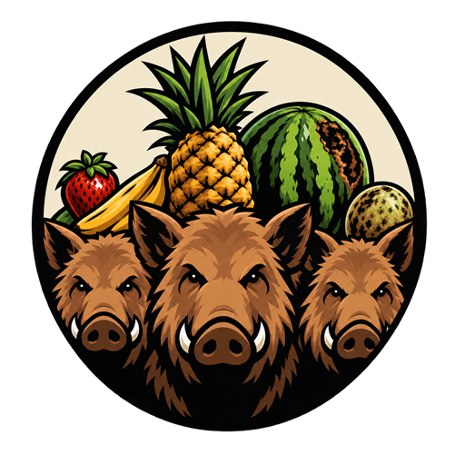
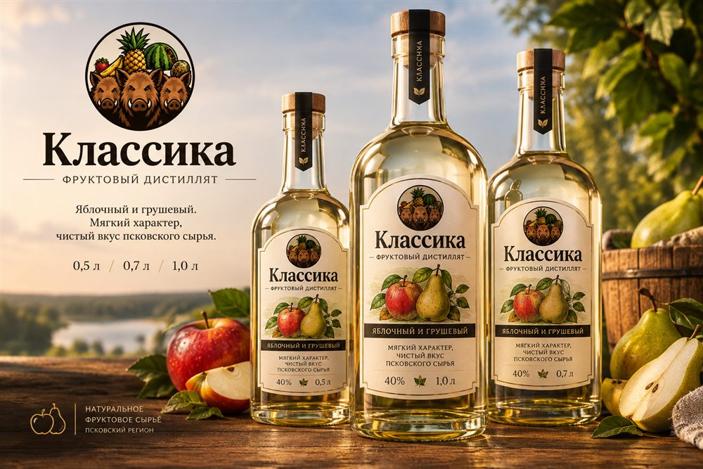
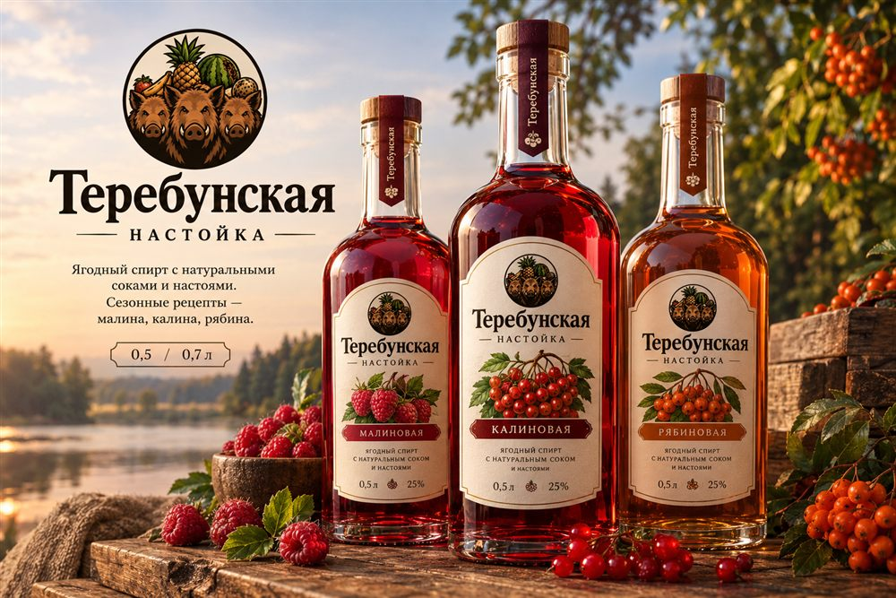
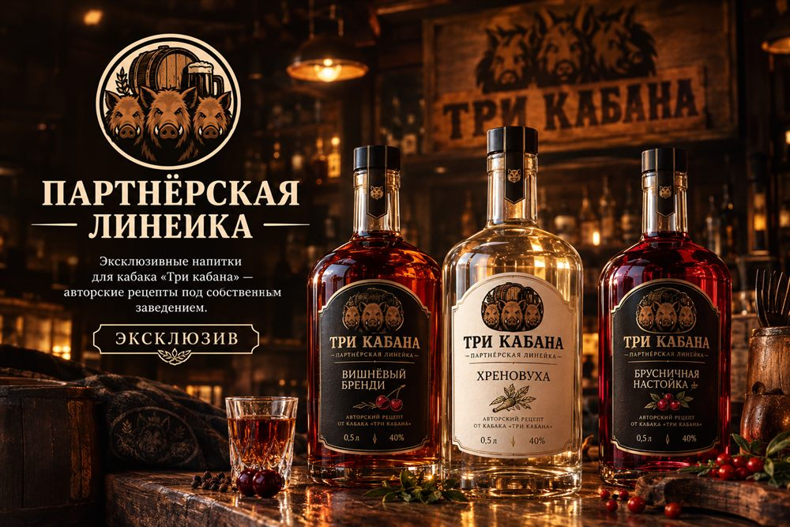
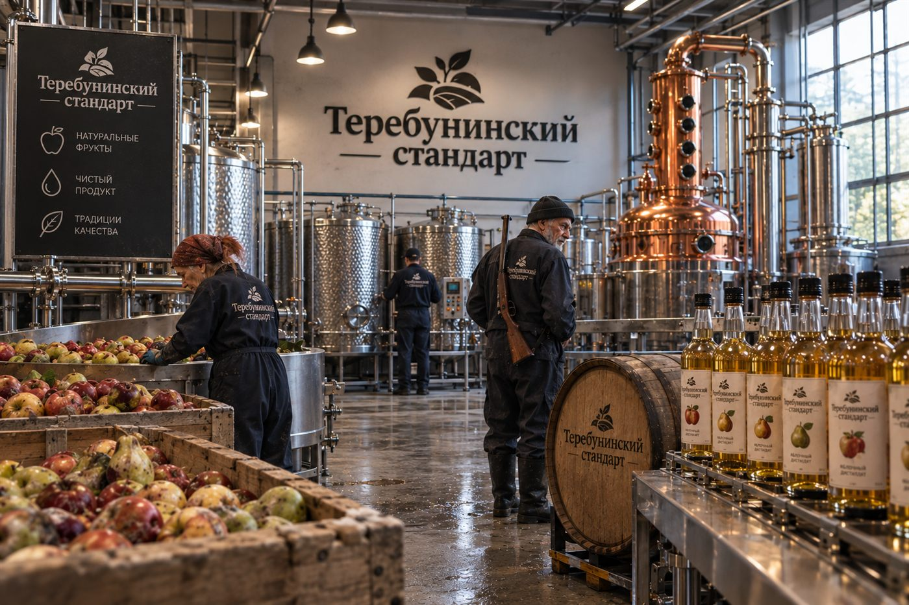

Бизнес-план · 2026
Производство фруктовых и ягодных дистиллятов в Санкт-Петербурге
Честный напиток из псковской глубинки
01 · Резюме проекта
Производство и реализация легальной алкогольной продукции — фруктовых и ягодных дистиллятов — в Санкт-Петербурге.
02 · Структура
Владелец лицензий, производства и товарного знака. Работа в рамках ФЗ-171, ЕГАИС, «Честный ЗНАК», уплата акцизов.
Коммерческое обозначение производственной площадки в Санкт-Петербурге.
Потребительский бренд, под которым продукция выходит на рынок.
03 · Продукт

Яблочный дистиллят (кальвадос) и грушевый дистиллят. Крепость 40%.

Ягодные настойки с натуральными соками: малина, калина, рябина.

Эксклюзивная продукция для партнёрского кабака + овощные/фруктовые спирты.
04 · Рынок
Кто наши клиенты
Конкуренты и наше преимущество
05 · Сбыт
Регулярные поставки и эксклюзивная линейка. Даёт базовую загрузку производства и обратную связь.
Фирменные точки, маркетплейсы (при наличии разрешений), фестивали, дегустации.
Другие бары, рюмочные и рестораны Санкт-Петербурга. Снижает зависимость от одного партнёра.
06 · Производство

07 · Маркетинг
08 · Финансы
Аренда цеха, оборудование, лицензии, первая партия сырья, транспорт, маркетинг.
Аренда, коммунальные, зарплаты, налоги, акцизы, логистика.
Сырьё, тара, этикетки, бензин — зависят от объёма производства.
Опт для «Трёх кабанов», прямые продажи, опт для других заведений.
Объём поставок в «Три кабана» + минимальные прямые продажи.
При стабильном сбыте по всем трём каналам.
09 · Риски
Инвестиции
Скан QR-кода — перевод по СБП без комиссии.
Деньги идут на запуск производства.
Мы собираем средства на запуск завода: оборудование, первую партию сырья из Теребуней и оформление документов.
Каждый вклад — шаг к открытию!
10 · Вывод
Гимн завода
Мы скупаем мятые яблоки с грядки,
Дёшево, честно, без лишней приглядки.
Из них дистиллят — родной и живой,
Пусть конкуренты кричат: «Он чужой!»
Мы легальны, натуральны — в этом наш путь,
Кто с нами — тому посчастливится тут!
Из Теребуней нам не нужно стыдиться —
Весь Петербург будет нами гордиться!
Спасибо за внимание
Санкт-Петербург, Белый остров, 1У · индекс 198184
Кировский район, муниципальный округ Морские ворота
Теребунинский стандарт — честный напиток из глубинки